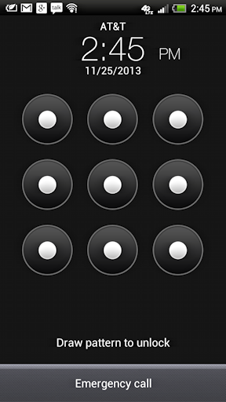

Dans ce document, nous allons décrire le déroulement du projet, les difficultés rencontrées à chaque étape, et les réponses que nous y avons apporté. Pour cela, nous évoquerons point par point chaque grand composant du projet.
L'objectif principal que nous nous sommes fixé lors de la préparation de ce challenge était de proposer un environnement ludique pour découvrir des dimensions variées du monde de la sécurité informatique. Nous avons notamment essayé d'intégrer des éléments relevant de l'inforensic (partie Android Forensic), de l'exploitation web (partie Exploitation Web) et des éléments de cryptographie et de réseau (partie Compréhension du Protocole). Une étape supplémentaire, mêlant cryptographie et exploitation web a également été développée, mais non intégrée en raison des contraintes temporelles liée à l'organisation de la convention.
Le développement de ce challenge nous a également permis de travailler sur des environnements matériels variés (Arduino, Raspberry Pi, Android), ce qui s'est révélé particulièrement formateur pour nous. Voici une photo de la "bombe" mise en place pour le challenge :
Cette étape a été réalisée par Romain Cayre et documenté par Hong Duong Tran. L'idée principale était de proposer un challenge ludique, qui permettent de comprendre le fonctionnement d'Android du point de vue de la sécurité.
Le choix de travailler sur le motif de déverouillage a été inspiré par un article d'Infosec qui abordait cette problématique. Il nous a semblé qu'il était intéressant de travailler sur un élément concret : une fonctionnalité extrêmement répandue, que de nombreuses personnes ont déjà utilisé.
Le principe du challenge est d'inverser une empreinte sha1 du motif de déverouillage afin de retrouver le geste à réaliser pour déverouiller le téléphone. Cette empreinte est enregistrée dans le fichier binaire "gesture.key", situé sur une partition privée /data/system des téléphones android.
La plupart des articles évoquant cette attaque utilisent une Rainbow Table, mais nous avons trouvé beaucoup plus formateur de proposer une attaque sans tables précalculées. Cette attaque peut être réalisée par bruteforce relativement facilement, car l'ensemble des antécédents est très petit (on part d'un alphabet de taille 9, pour des mots d'une longueur maximale de 9 symboles, et du fait qu'il s'agit d'un geste on peut ajouter un certain nombre de contraintes qui limitent encore davantage la taille de l'ensemble) : il est donc possible de tester exhaustivement les difféntes combinaisons, en générant le sha1 correspondant et en le comparant à celui extrait de "gesture.key".

Nous ne voulions pas intégrer un élément provenant d'un dump mémoire récupéré sur Internet, nous avons donc extrait le fichier "gesture.key" d'un téléphone en notre possession via adb. Cette étape a été plus délicate que prévue, car la partition /data/system n'est accessible que si le téléphone a été rooté. En effet, Android limite par défaut l'accès à un utilisateur disposant de privilèges restreints, et Google n'a pas fourni de solution générique permettant d'accéder au superutilisateur.
Après avoir testé de nombreux utilitaires, la combinaison d'un exploit nommé towelroot et de l'utilitaire SuperSu nous a permis d'obtenir un accès root sur le téléphone, et donc d'accéder à la partition recherchée.
Initialement, nous comptions demander aux participants de développer eux même le script permettant d'effectuer le bruteforce. Cependant, après discussion avec notre tuteur, nous avons conclu que cette démarche était trop ambitieuse pour le temps d'atelier dont nous disposions, l'écriture du script une fois le principe compris n'étant pas forcément très intéressante. Nous avons donc réservé l'écriture du script au Niveau expert, et développé un script à paramétrer utilisable sans programmation pour les autres utilisateurs du challenge.
Pour cette seconde étape, la démarche était de développer une application Web qui soit exploitable facilement, de préférence avec plusieurs techniques différentes, mais également d'implémenter les différents éléments pour la communication entre le téléphone Android, le Raspberry Pi et l'Arduino. Il s'agit donc de l'étape ayant demandé le plus de travail.
Au niveau de la répartition des rôles, l'application Android a été développée par Hong Duong Tran, l'application web et le programme Arduino par Romain Cayre. La documentation a été écrite par Romain Cayre.
Il s'agissait, lors de cette étape, de mettre en place le système de communication sans se préoccuper des problématiques liées au chiffrement One Time Pad. Le développement du programme Arduino a donc été réalisé dans un premier temps en recevant directement les messages en clair.
Plusieurs problématiques se sont posées au niveau du développement du programme Arduino, principalement liées aux limitations techniques de l'Arduino Uno. En effet, pour faire fonctionner l'écran TFT LCD, il était indispensable d'inclure des bibliothèques déjà gourmandes en ressources. Il a donc fallu être constamment attentif aux problématiques d'allocation et de libération de la mémoire. Par exemple, un bug problématique a été rencontré : la carte arduino redémarrait spontanément au bout de quatre minutes environ : ceci était dû à une saturation de la mémoire RAM causé par l'oubli d'un free (de la mémoire allouée sur le tas n'étais jamais libérée), il a donc été nécessaire d'inclure la libération mémoire correspondante.
Les premières versions des scripts python de communication ont également été écrits dans ce cadre, et ont permis de tester rapidement la communication avec l'Arduino. La principale problématique fut qu'il était indispensable de lancer la lecture sur le port série avant toute écriture, pour ne pas provoquer un reset de l'arduino inopinément. Ces problématiques ont demandé un travail de documentation conséquent pour être résolues, nous n'étions en effet pas habitués à développer pour ce type de matériel.
Le développement de l'application web s'est déroulé en s'appuyant sur les scripts python déjà écrit. Il était important de pouvoir y intégrer la faille include, nous avons donc choisi de mettre à jour le compteur régulièrement via la liaison série, et de passer par l'intermédiaire d'un fichier "compteur" pour qu'il puisse être inclus dans le script read.php. La première version d'action.php était dédié à faire la liaison entre les données envoyées par l'application Android sans traitement supplémentaire lié au chiffrement : pour faciliter la communication entre ces différentes entités, le développement étant assuré par des personnes différentes, nous nous sommes mis d'accord sur une API minimale à respecter pour l'envoi des messages de contrôle de la bombe.
Finalement, pour justifier la présence d'une faille include, nous avons mis en place une page "vitrine" affichant le compteur, et envoyant régulièrement des requêtes AJAX pour mettre à jour le compteur par l'intermédiaire de read.php. La problématique de la liaison série qui provoque un reset de l'arduino si une écriture est réalisée avant l'opération de lecture nous a amené à ajouter un script init.php, chargé de démarrer le programme python de lecture périodique sur la liaison série avant toute manipulation du site web.
Le développement de l'application Android a principalement été compliqué par la nécessité de travailler avec l'Android Studio et un émulateur. Cet environnement de développement est particulièrement lourd, et malgré nos recherches, nous n'avons pas trouvé de solutions alternatives satisfaisantes (nous avons réalisé quelques prototypes avec Kivy pour réaliser l'application en python, mais ces tests se sont révélés décevants). L'application a d'abord été réalisée pour gérer l'envoi des messages, puis a été modifiée pour intégrer l'affichage dynamique du compteur directement sur l'application.
L'exploitation de la faille include s'est révélée plus compliquée que prévu : nous avions en effet envie de proposer une approche originale, par exploitation des fichiers de journalisation. Il s'agit d'envoyer une première requête pour enregistrer le payload PHP dans les logs, puis d'inclure les logs. Ceci a demandé de rendre ces journaux accessibles en lecture par l'utilisateur apache www-data, ce qui n'était pas le cas par défaut. Cependant, après une discussion avec notre tuteur, nous avons conclus qu'il fallait proposer des solutions d'exploitation alternatives, moins complexes, pour assurer que quel que soit le niveau de l'utilisateur, l'étape soit possible à résoudre : nous avons donc modifié le fichier php.ini afin de le rendre plus permissif, autorisant notamment l'exploitation par inclusion de fichiers distants. Le travail de documentation a été conséquent, car nous avons fait le choix de détailler trois méthodes d'exploitation différentes.
Pour cette dernière étape, il a fallu intégrer le chiffrement One Time Pad et la concaténation d'un secret aux messages clairs aux composants précédents. Le développement côté Raspberry Pi / Arduino a été réalisé par Romain Cayre, les adaptations de l'application Android ont été prises en charge par Hong Duong Tran. La documentation a été écrite par Romain Cayre.
Cette étape a nécessité plusieurs modifications, et a posé de nombreux problèmes. Tout d'abord, il a fallu trouver une solution pour résoudre le problème de la taille différente des messages, qui rendait compliqué l'implémentation du One Time Pad. Pour pallier à cette problématique, nous avons choisi d'utiliser non pas les messages clairs directement, mais leur empreinte sha1, afin de normaliser la taille.
Nous nous sommes également retrouvé confronté à une problématique imprévue : le chiffrement one time pad avait pour conséquence que certains octets n'étaient plus des caractères imprimables, après chiffrement. Nous avons donc décidé d'utiliser la fonction PHP bin2hex, afin d'obtenir une chaîne uniquement composée de caractères hexadécimaux. Ce choix a eu l'effet collatéral de rendre le message chiffré trop long pour être transmis par la liaison série à l'arduino. Afin de ne pas compliquer l'implémentation et que cette problématique n'influe pas sur l'expérience utilisateur, nous avons décidé de vérifier les empreintes sha1 des chiffrés (et non le chiffré en lui même) du côté du programme Arduino, et nous avons intégré la transformation du sha1 dans le programme python send.py afin que cela soit transparent pour l'utilisateur.
Initialement, nous avions implémenté le chiffrement en PHP : cependant, après discussion avec notre tuteur, il nous a semblé plus intéressant que cette problématique soit gérée par un programme compilé, pour que la résolution de cette étape ne se limite pas à une simple lecture du code source. Le programme onetimepad a donc été développé, et une obfuscation minimale a été réalisée pour que la clé de chiffrement ne puisse pas être récupérée trop facilement (avec le programme strings par exemple). Des problématiques liées aux différences entre l'architecture de test (x86) et l'architecture du Raspberry Pi (ARM) ont également dû être résolues.
Il nous a également semblé intéressant d'intégrer la nécessité de procéder à une écoute du trafic réseau pour résoudre le challenge : la vérification du message en clair a donc été modifiée pour être réalisée à partir des empreintes sha1, et un secret a été concaténé au message clair (la chaîne "ZESECRET") afin qu'il soit indispensable de sniffer pour forger le message "STOP". Ceci a évidemment impliqué des modifications sur l'application Android et sur l'application Web. Pour permettre l'utilisation de tcpdump sans nécessiter une élévation de privilèges, nous avons modifié les permissions de l'exécutable.